Affine transformations
In ZenCad, most objects are created at the origin, then moved into place using transformations.
Geometry is usually transformed through methods of Shape, the class representing geometric shapes. For complex transformations or animation, affine transformations can also be created as standalone objects.
Transform describes translation, rotation and uniform scaling, including reflections through signed scale; AffineTransform provides general affine transformations.
General transformations are more computationally expensive and may substantially change an object's internal geometric representation.
Transformations can be composed and inverted; see “Operations on transformations”.
Transformation utilities and special transformations are described under “Additional transformations”.
Basic transformations
There are four basic transformations: rotation, translation, scaling and reflection.
Rotation
Rotates a shape by angle a around an axis defined by vector v and passing through the origin.
If a is omitted, the rotation angle in radians equals the magnitude of v.
Methods of transformable geometric objects:
# Main syntax:
shp.rotate([x,y,z], angle)
shp.rotate([x,y,z])
shp.rotateX(x)
shp.rotateY(y)
shp.rotateZ(z)
# Shorthand syntax:
shp.rot([x,y,z], angle)
shp.rot([x,y,z])
shp.rotX(x)
shp.rotY(y)
shp.rotZ(z)
Creating a transformation object:
rotate([x,y,z], angle)
rotate([x,y,z])
rotateX(x)
rotateY(y)
rotateZ(z)
Translation
Translates a shape by vector (x, y, z).
For historical reasons, including OpenSCAD compatibility, ZenCad provides two synonymous families of functions and methods, translate and move, as well as mnemonic names.
Methods of transformable geometric objects:
# Main, alternative and mnemonic syntax:
shp.translate(x,y,z)
shp.translate([x,y,z])
shp.move(x,y,z)
shp.move([x,y,z])
shp.moveX(x)
shp.moveY(y)
shp.moveZ(z)
shp.right(x) # moveX(+x)
shp.left(x) # moveX(-x)
shp.forw(y) # moveY(+y)
shp.back(y) # moveY(-y)
shp.up(z) # moveZ(+z)
shp.down(z) # moveZ(-z)
# Shorthand syntax:
shp.movX(x)
shp.movY(y)
shp.movZ(z)
Creating a transformation object:
# Main syntax:
translate(x,y,z)
translate([x,y,z])
# Alternative syntax:
move(x,y,z)
move([x,y,z])
moveX(x)
moveY(y)
moveZ(z)
# Mnemonic syntax:
right(x) # moveX(+x)
left(x) # moveX(-x)
forw(y) # moveY(+y)
back(y) # moveY(-y)
up(z) # moveZ(+z)
down(z) # moveZ(-z)
Scaling
Scales a shape by a factor of a, either along an axis or uniformly.
Methods of transformable geometric objects:
shp.scale(a)
shp.scaleX(a)
shp.scaleY(a)
shp.scaleZ(a)
Creating a transformation object:
scale(a)
scaleX(a) # general_transformation
scaleY(a) # general_transformation
scaleZ(a) # general_transformation
scaleXYZ(x,y,z) # general_transformation
Reflection
Reflects geometry about a point, an axis through the origin, or a plane through the origin.
For reflection about a point, specify the center coordinates. For reflection about an axis, specify its direction vector. For reflection about a plane, specify its normal vector.
Methods of transformable geometric objects:
# Reflection about a point.
shp.transform(mirrorO(x,y,z))
shp.transform(mirrorO([x,y,z]))
# Reflection about an axis.
shp.transform(mirror_axis(x,y,z))
shp.transform(mirror_axis([x,y,z]))
shp.mirrorX() # equal to mirror_axis(1,0,0)
shp.mirrorY() # equal to mirror_axis(0,1,0)
shp.mirrorZ() # equal to mirror_axis(0,0,1)
# Reflection about a plane.
shp.transform(mirror_plane(x,y,z))
shp.transform(mirror_plane([x,y,z]))
shp.mirrorXY() # equal to mirror_plane(0,0,1)
shp.mirrorYZ() # equal to mirror_plane(1,0,0)
shp.mirrorXZ() # equal to mirror_plane(0,1,0)
Creating a transformation object:
# Reflection about a point.
mirrorO(x,y,z)
mirrorO([x,y,z])
# Reflection about an axis.
mirror_axis(x,y,z)
mirror_axis([x,y,z])
mirrorX() # equal to mirror_axis(1,0,0)
mirrorY() # equal to mirror_axis(0,1,0)
mirrorZ() # equal to mirror_axis(0,0,1)
# Reflection about a plane.
mirror_plane(x,y,z)
mirror_plane([x,y,z])
mirrorXY() # equal to mirror_plane(0,0,1)
mirrorYZ() # equal to mirror_plane(1,0,0)
mirrorXZ() # equal to mirror_plane(0,1,0)
Operations on transformations
An affine transformation has the form p → A·p + t. With nonzero translation, it is not a linear operator on three-dimensional vectors; composition can be represented using 4 × 4 matrices in homogeneous coordinates.
Composition
Use multiplication to compose affine transformations. Composition is not commutative.
Read compositions from right to left. In moveX(20) * rotateZ(deg(60)), the 60-degree rotation is applied first, followed by a translation of 20 units along X.
Example:
trans = moveX(20) * rotateZ(deg(60))
from zencad.internal_models import knight
m = knight()
disp(trans(m))
# alternate: box(5, center=True).rotZ(deg(60)).movX(20)
| Before | After |
|---|---|
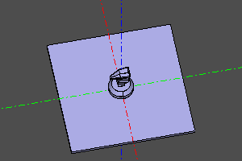 |
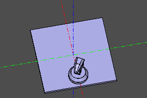 |
Inversion
Computes the inverse transformation.
Signature:
trsf.inverse()
Example:
trans = rotateZ(deg(45))
from zencad.internal_models import knight
m = knight()
disp(trans(m), color.green)
disp(trans.inverse()(m), color.red)
| Transformation | Inverse |
|---|---|
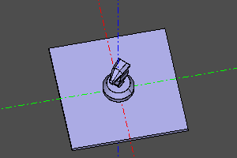 |
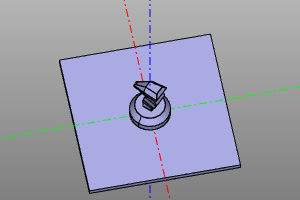 |
Example:
trans = moveX(20) * rotateZ(deg(45))
from zencad.internal_models import knight
m = knight()
disp(trans(m), color.green)
disp(trans.inverse()(m), color.red)
| Transformation | Inverse |
|---|---|
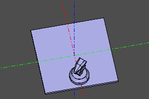 |
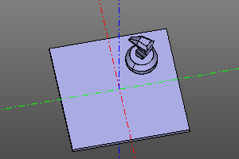 |
Note. The inverse of a composition can be computed as:
(A * B)-1 = B-1 * A-1
Additional transformations
Identity transformation
Leaves the object unchanged. Create it with transform() or nulltrans().
nulltrans()
| Before | After |
|---|---|
 |
|
Shortest rotation
The shortest rotation from vector f to vector t.
Signature:
short_rotate(f, t)
Example:
from zencad.internal_models import knight
short_rotate((0,0,1), (1,1,1))(knight())
| Before | After |
|---|---|
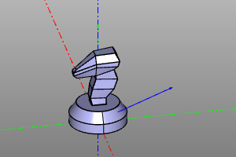 |
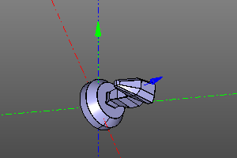 |
Multiple transformations
Applies an array of transformations, transes, to a prototype.
With array disabled, the results are combined by Boolean union. With array enabled, an array of results is returned.
Create an assembly explicitly: unit(parts=copies), after importing unit from zencad.assemble.
Signature:
copies = multitrans(transes, array=True)(model)
fused = multitrans(transes)(model)
# multitransform is a synonym for multitrans
Example:
def extrans():
return multitransform([
translate(-20,20,0) * rotateZ(deg(60)),
translate(-20,-20,0) * rotateZ(deg(120)),
translate(20,20,0) * rotateZ(deg(180)),
nulltrans()
])
from zencad.internal_models import knight
disp(extrans()(knight()))
| Before | After |
|---|---|
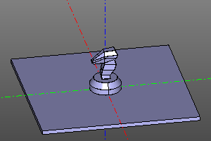 |
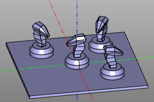 |
Circular array
Creates a circular array of n objects over the angular range yaw. The endpoint parameter controls whether the final angle is included. (For array, see Multiple transformations.)
Signature and transformation code:
rotate_array(n, yaw=deg(360), endpoint=False, array=False)
Examples:
from zencad.internal_models import knight
m = knight().move(20,20)
disp(rotate_array(6, yaw=deg(270), endpoint=True)(m))
| Before | After |
|---|---|
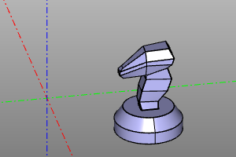 |
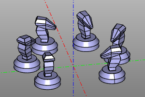 |
Circular array with roll
Creates a circular array of n objects over the angular range yaw. The endpoint parameter controls whether the final angle is included. (For array, see Multiple transformations.)
The roll option sets the range of roll angles around the circular path.
rotate_array2 positions the source object differently from rotatearray_: the source starts at the origin, is rotated by 90 degrees around X, then translated along X by the radius r.
Signature:
rotate_array2(
n, r=None,
yaw=(0,deg(360)), roll=(0,0),
endpoint=False, array=False)
Example:
rotate_array2(
n=60,
r=20,
yaw=(0,deg(270)),
roll=(0,deg(360)),
array=True)(
square(10, center=True, wire=True)
)
| Before | After |
|---|---|
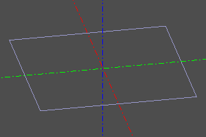 |
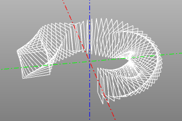 |
Square reflection
Adds three reflections of the source object.
Signature and transformation code:
sqrmirror(array=False)
sqrtrans(array=False) # synonym
Example:
from zencad.internal_models import knight
sqrmirror()(knight().move(20,30))
| Before | After |
|---|---|
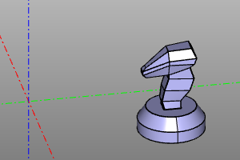 |
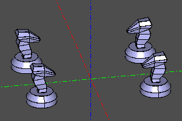 |
Transforming a point and obtaining a matrix
A transformation object can be applied to a point. Transform.matrix() returns a numeric 4×4 matrix, evaluating the required dependencies.
import zencad as z
move = z.translate(10, 0, 0)
turn = z.rotateZ(z.deg(90))
combined = move * turn
p = combined(z.point3(1, 0, 0))
assert abs(float(p.x) - 10) < 1e-7
assert abs(float(p.y) - 1) < 1e-7
matrix = combined.matrix()
Quaternions
quaternion(x, y, z, w) defines a quaternion with the scalar component w last. quaternion(0, 0, 0, 1) represents no rotation. To specify an axis and angle, use quaternion_axis_angle:
from zencad import *
q = quaternion_axis_angle(vector3(0, 0, 1), deg(90))
v = q.rotate(vector3(1, 0, 0))
assert abs(float(v.x)) < 1e-7
assert abs(float(v.y) - 1) < 1e-7
placement = q.to_transform()
display(placement(box(10, 5, 3)))
show()
q1 * q2 composes rotations from right to left; q.inverse() returns the inverse rotation. q.normalized() normalizes the quaternion, and q.to_transform() converts it to a Transform.